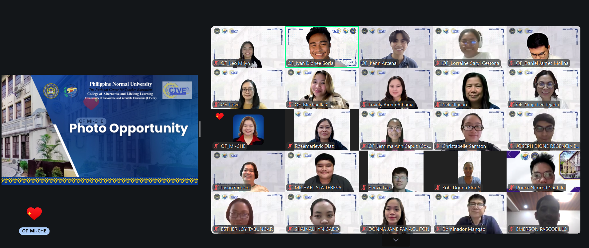
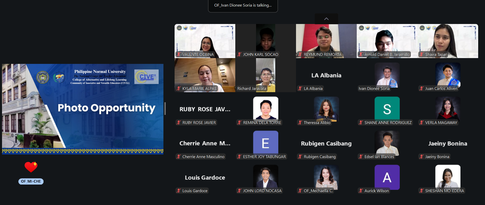

CIVer Photos
English Educator | CTP Student | Lifelong Learner
Through this portfolio, I invite you to explore my teaching journey, educational beliefs, learning experiences, and continuing development as an educator.
01 · Overview & Background
"Through teaching, I hope to inspire curiosity, confidence, and a lifelong love of learning."
I am Louis Gardoce, an English educator currently pursuing a Certificate in Teaching Program (CTP) at the Philippine Normal University.
My professional journey has not followed a straight path toward teaching. Before fully entering the field of education, I gained experience in different professional environments, including legal work, banking, online English teaching, and recruitment. Each experience exposed me to different people, expectations, communication styles, and ways of working. Looking back, these experiences have become part of the perspective I bring into the classroom.
My transition into education began with ESL teaching, where I discovered how meaningful it can be to help learners communicate more confidently and effectively. Since then, teaching has become more than a profession for me. It has become a continuous process of learning, adapting, reflecting, and growing alongside my students.
Today, I work as an English Specialist while continuing my formal preparation as a teacher through the CTP. My experiences have taught me that effective teaching requires more than knowledge of a subject. It requires patience, intentionality, empathy, flexibility, and a willingness to understand learners as individuals.
As I continue my journey in education, I hope to become a teacher who does not simply help students learn English, but also helps them develop the confidence to use their voices.
My journey as an educator began somewhat unexpectedly.
My earlier professional experiences gave me opportunities to develop skills in communication, organization, problem-solving, and working with people. However, it was through teaching English that I began to understand how these skills could be used in a different and more meaningful way.
As I entered the ESL field, I encountered learners with different backgrounds, proficiency levels, goals, personalities, and learning needs. Some students needed support with grammar and vocabulary. Others knew the language well but struggled to express themselves confidently. These experiences taught me that knowing English and being able to use English effectively are not always the same thing.
Teaching therefore became an exercise in observation and adaptation. I learned to look beyond a student's immediate mistakes and ask deeper questions: What is preventing this learner from progressing? What kind of support does this student need? How can I make the learning experience meaningful?
My experience at AIEP has further shaped this perspective. Working with diverse learners has strengthened my belief that students learn best when they feel supported and understood. It has also taught me to value the small moments of progress—a student speaking with greater confidence, expressing an idea more clearly, understanding a concept that once seemed difficult, or simply becoming more willing to participate.
Pursuing the Certificate in Teaching Program has added another dimension to this journey. It has allowed me to examine experiences that I once understood intuitively through the lens of educational theory and pedagogy. Concepts that may have seemed abstract in class become more meaningful when I can connect them to situations I have encountered as a teacher.
My journey is therefore not a story of arriving at a finished version of myself as an educator. It is a continuing process of becoming.
I teach, I reflect, I learn, and I continue to grow.
02 · Educational Foundation
I believe that effective teaching begins with a simple principle: learners need to feel that they are cared for.
A classroom is more than a place where information is transferred from teacher to student. It is a space where learners take risks, make mistakes, ask questions, discover their abilities, and gradually develop confidence. For language learners in particular, this environment matters because communication requires vulnerability. Students need to feel sufficiently safe to speak, make mistakes, and try again.
As an English educator, I therefore see my role as more than teaching grammar, vocabulary, pronunciation, or communication strategies. My responsibility is also to create conditions in which learners can use what they have learned meaningfully.
I believe that students are not identical recipients of instruction. They bring different experiences, strengths, goals, difficulties, and ways of learning into the classroom.
Because of this, I value learner-centered and responsive teaching. Rather than relying solely on a fixed approach, I believe teachers should observe their learners and adjust instruction when necessary. A strategy that works well for one student may not work as effectively for another.
Language learning inevitably involves mistakes. I do not view mistakes simply as failures to be corrected; they can also provide valuable information about what a learner currently understands and what still needs development.
I aim to create an environment where students can make mistakes without feeling embarrassed or discouraged. Feedback should not merely point out what is wrong. It should help learners understand why something needs improvement and, more importantly, how they can improve it.
Language learning inevitably involves mistakes. I do not view mistakes simply as failures to be corrected; they can also provide valuable information about what a learner currently understands and what still needs development.
I aim to create an environment where students can make mistakes without feeling embarrassed or discouraged. Feedback should not merely point out what is wrong. It should help learners understand why something needs improvement and, more importantly, how they can improve it.
04 · PORTFOLIO EDUC 3
05 · Portfolio Educ 4
Basic Concept in Assessment and Evaluation
Stages in the Development and Validation of an Assessment Instrument
A glimpse into my journey with the Community of Innovative and Versatile Educators (CIVer).


05 · Contact
Feel free to send an email or click the links for more information.